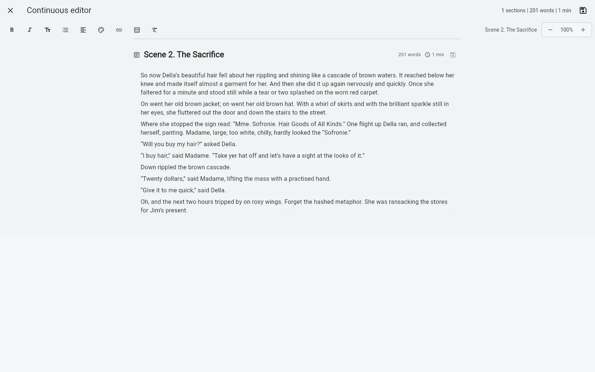

Нон-фикшнИсследования + структура
Программа для нон-фикшн проекта, который постоянно обрастает контекстом.
Нон-фикшн редко начинается как аккуратная книга. Сначала появляются заметки, статьи, исследования, примеры, черновики, вырезанные куски и аргументы — и только потом из них складывается рукопись.
B-Maker позволяет держать исследования, заметки, статьи, организационные папки, разделы рукописи, версии, аналитику и издательские данные внутри одного переносимого проекта.
Начните до того, как знаете финальную структуру
Можно начать с одной статьи, одного эссе или набора черновых разделов. Организационные папки хранят материалы внутри проекта, но не попадают в финальный экспорт. Позже вокруг них может вырасти структура книги — без необходимости заранее проектировать всё оглавление.

Коллекции как временные рабочие столы
Основное дерево не обязано меняться вместе с текущим фокусом. Ручная коллекция может собрать только разделы, которые вы редактируете на этой неделе, а сохранённый поиск — показать тексты по статусу, типу или запросу. Это особенно удобно для книг, собранных из интервью, эссе, исследований или уже опубликованных статей.
Аргумент должен оставаться видимым
Карта идей полезна не только для художественной прозы. На ней можно разместить тезисы, доказательства, главы, заметки, изображения и настоящие разделы рукописи. Связи показывают зависимости между идеями, а группы затем могут становиться структурой текста.
Редактура — часть исследования
Нон-фикшн меняется вместе с фактами и аргументацией. Несколько версий позволяют сохранить старую формулировку, сравнить редакции, заблокировать утверждённый вариант и оставить комментарий именно на нужном фрагменте.
Подготовьте не только текст, но и пакет вокруг него
Издательское пространство отдельно хранит позиционирование, аннотацию, синопсис или план-проспект, сведения об авторе, права и декларацию использования ИИ. Чек-лист показывает, чего ещё не хватает перед экспортом.
Подойдёт, если…
Ваш нон-фикшн начинается как набор материалов и постепенно превращается в книгу, отчёт, сборник эссе или большой текст — и вы хотите сохранить исследовательский контекст рядом с рукописью, а не разбросать его по папкам и приложениям.
Связанные гайды
Программа для статей и книг · Как собрать книгу из статей · Local-first программа для письма